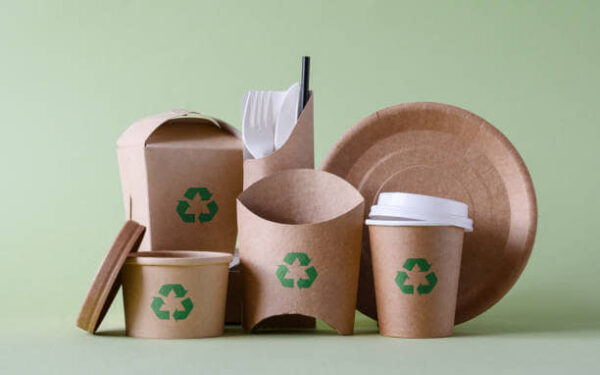
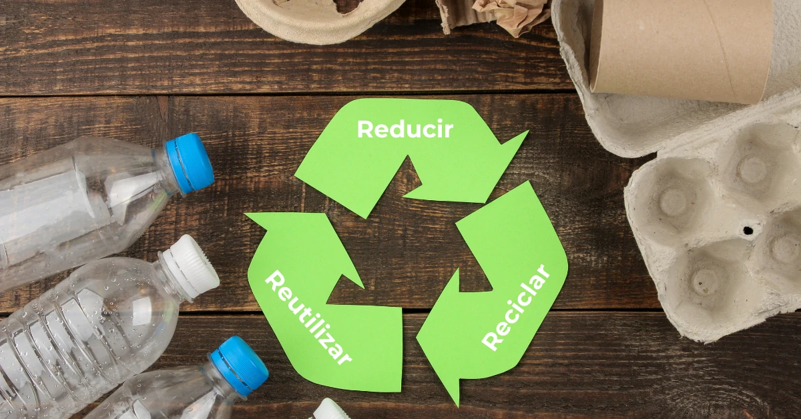
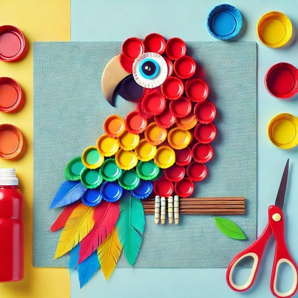
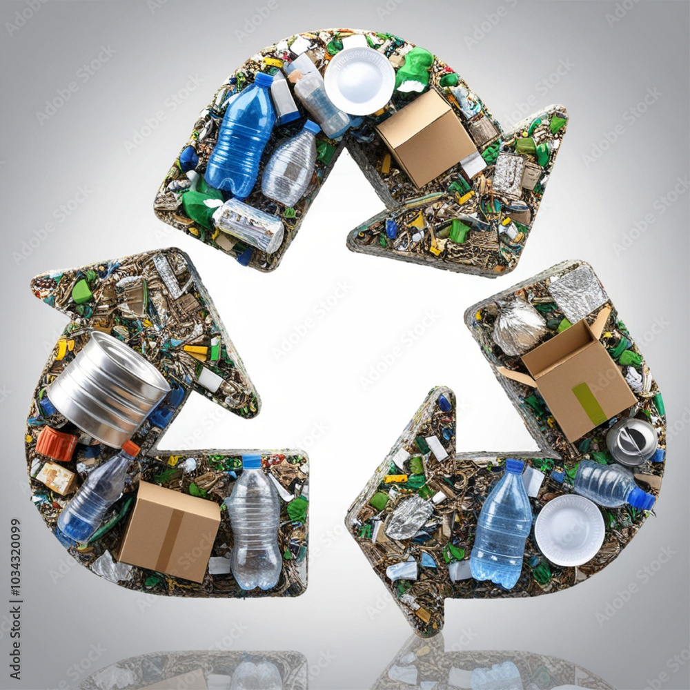

LAS 3 R: REDUCIR, REUTILIZAR Y RECICLAR
Reducir

La primera de las tres R es **Reducir**, que significa disminuir la cantidad de materiales y productos que consumimos en nuestra vida diaria. Muchas veces compramos artículos de un solo uso sin reflexionar sobre el impacto ambiental que generan desde su fabricación hasta su desecho. Al reducir el consumo, disminuimos la extracción de recursos naturales, la contaminación por transporte de mercancías y la acumulación de residuos en rellenos sanitarios, ríos y océanos. Ejemplos prácticos son elegir productos con menos empaque, evitar bolsas plásticas desechables, comprar solo lo necesario y revisar la durabilidad de los objetos antes de adquirirlos. Reducir no implica dejar de consumir, sino consumir de forma consciente y responsable para proteger el entorno natural para las generaciones futuras.
Reutilizar se trata de extender la vida útil de los productos mediante su reaprovechamiento.
Reducir significa disminuir la cantidad de productos y materiales que se consumen, sobre todo los de un solo uso. Es la R más importante porque ataca el problema en su origen: si no se compra, no se desecha.

Reutilizar

La segunda R corresponde a **Reutilizar**, que consiste en darle una nueva función a un objeto antes de desecharlo, sin necesidad de transformarlo mediante procesos industriales. Muchos envases, frascos, telas y cajas conservan su utilidad y pueden ser usados repetidamente para almacenar alimentos, organizar materiales o crear manualidades. La reutilización prolonga la vida útil de los materiales, reduce la demanda de materias primas y disminuye la cantidad de desechos que llegan a los contenedores de basura. A diferencia del reciclaje, la reutilización requiere menos energía, por lo que es una acción mucho más eficiente para cuidar el medio ambiente y puede ser implementada fácilmente en hogares, escuelas y comunidades enteras.
Se trata de extender la vida útil de los productos mediante su reaprovechamiento.

Reciclar

La tercera R es **Reciclar**, que es el proceso mediante el cual los residuos se transforman en materias primas para fabricar productos nuevos. Para que el reciclaje funcione correctamente es indispensable realizar una separación adecuada de los residuos en contenedores diferenciados, ya que la contaminación por mezcla de materiales puede arruinar todo el lote de reciclaje. El reciclaje permite recuperar materiales como papel, cartón, plástico, vidrio y aluminio, reduciendo la explotación de recursos naturales y la emisión de gases contaminantes. Es importante recordar que el reciclaje es la última opción dentro de la regla de las tres R; primero debemos intentar reducir y reutilizar antes de depositar los residuos en los contenedores correspondientes.
Casi cualquier material puede ser procesado para incorporarlo nuevamente al proceso productivo. Desde el reciclaje de plástico o vidrio hasta el de complejos aparatos electrónicos como los teléfonos móviles.
